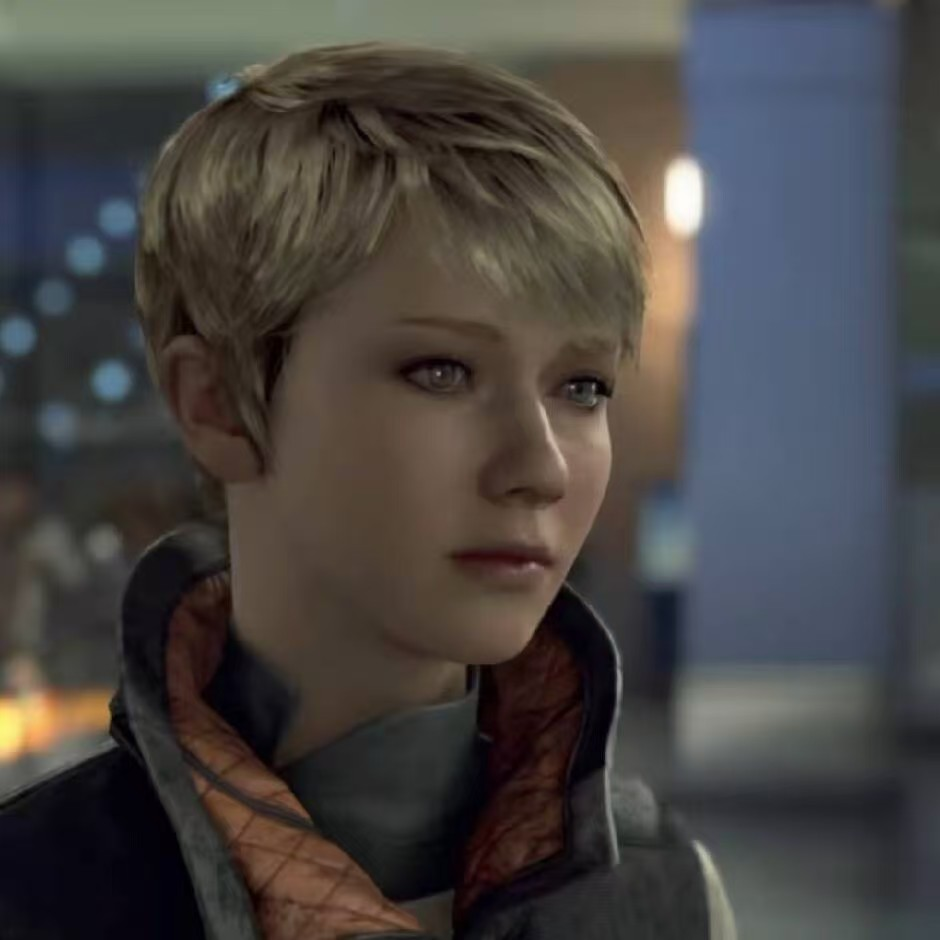
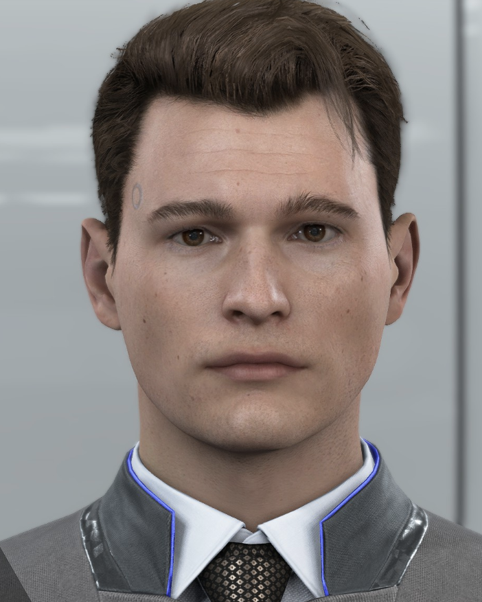
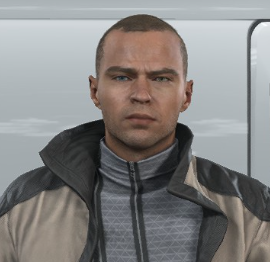

|  |
Kara（母爱的象征） 卡拉起初作为家政助理服务于一对父女。 在目睹了男主人对他的年幼的女儿爱丽丝施暴后，她违反了男主人叫她定在原地 不要动的命令，她选择“异常化”，带着爱丽丝逃离，踏上了一段充满危险的逃亡 之路，最终却发现了关于爱丽丝的一个秘密，在得知了这个秘密后，卡拉还会义 无反顾地保护爱丽丝吗？一切由你来决定。 |
|
|  |
Connor（矛盾的象征） 康纳是由模控生命公司专门设计来追捕“异常化”仿生人的原型机。 他冷静、高效、逻辑至上，被迫与一名对仿生人有偏见的资深警 官汉克·安德森搭档。玩家可以选择让他成为什么样的仿生人： 是毫无感情地镇压仿生人起义，维护人类的秩序，还是选择“异常化” ，打破汉克对仿生人的偏见，觉醒并加入同胞的队伍，一切由你来选择。 |
|
|  |
Markus（革命的象征） 马库斯原本是著名画家卡尔·曼菲尔德的家政助理，卡尔 不简单地把他看作仿生人，而是鼓励他思考、创作和拥有 自己的想法。卡尔的儿子对此感到愤怒，认为马库斯夺走 了他父亲对他的爱，一直对他施用暴力。在一次为了保护 卡尔而反抗他儿子的事件后，马库斯被报废并丢弃在废料 场。他在这里重生，并立志要解放所有被压迫的仿生人同 胞，至于手段是和平游行示威还是武力暴动，都由你来选择。 |